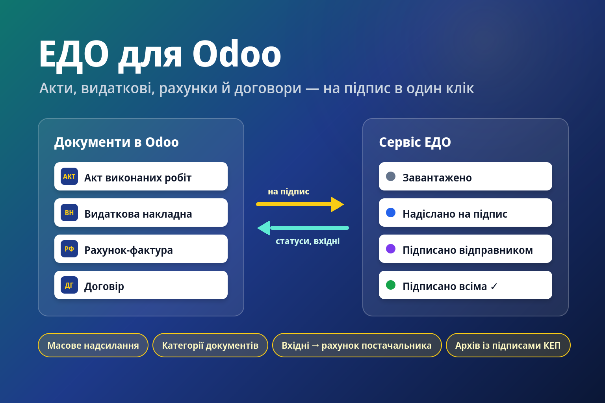

Електронний документообіг (ЕДО) для Odoo
Основа інтеграцій з українськими сервісами ЕДО. Сам сервіс підключається окремим модулем
(Вчасно — l10n_ua_edo_vchasno).
- Кнопка «Надіслати у ЕДО» на документах: акт, видаткова, рахунок-фактура йдуть у сервіс на підпис.
- Статуси (надіслано, підписано відправником, підписано всіма, відхилено) оновлюються автоматично.
- Вхідні документи підтягуються самі, контрагент знаходиться за ЄДРПОУ; з вхідного рахунку — чернетка рахунку постачальника.
- Після підписання всіма сторонами архів із підписами прикріплюється до документа в Odoo.
- Підпис накладається в сервісі ЕДО: ключ КЕП в Odoo не зберігається.
Для розробників: міксин l10n_ua.edo.mixin додає надсилання до будь-якої моделі —
достатньо вказати звіт, контрагента й реквізити документа.